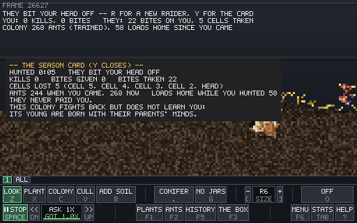
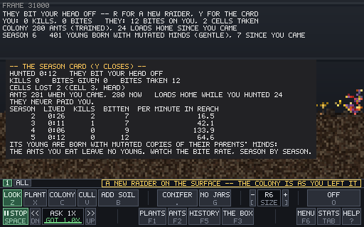

You are a centipede, the shipped nest raider, set down beside a living ant colony that has had 20,000 frames to dig in. Pick off foragers, try the door, back away when they bite. The colony fights back with the same bite rules every animal in the engine uses.
cargo run --release --bin lab -- demo=enemy # the trained colony
cargo run --release --bin lab -- demo=enemy oldant # the hand-built colonyYour body is drawn in crimson with a white ring on the head; the ants are amber. The HUD shows one wound meter for your whole body. When a bite fills it, the cell that took that bite comes off, so a bite on the head kills you and bites on the tail cost one cell at a time.
The spit is gone: your bite works with a full gut, and the extra flesh is just not eaten. For strategy, the first of the three directions is built. Hold Shift to sprint at 2.5 times your pace (ants are slower than you now, not about even) for 4 seconds, then you are winded until your wind comes back. Lost tail cells grow back, one every 15 seconds, once your wound has healed and you have eaten enough to overfill your tank. So the loop is: dart in, kill, sprint out, eat, heal, come back whole.
Same seed, same scripted player, trained colony: walk toward the door, and back off at the first cell lost. Over 6 seeds and 20,000 frames:
| Play | Version | Raider died | Kills in all |
|---|---|---|---|
| walk at the door | before | 5 of 6 | 0 |
| walk at the door | hit and run | 4 of 6 | 0 |
| stalk lone foragers | before | 2 of 6 | 412 |
| stalk lone foragers | hit and run | 1 of 6 | 518 |
At the door the raider lived longer on 5 of 6 seeds, but the script still never kills anything there, and regrowth fired only 3 times in all 24 runs (a raider hurt at the door hasn't eaten yet). Whether this feels like a strategy is a question for your hands, not the script.
Same seed, same scripted player, one minute of play after landing. The player waits on the surface for an ant walking alone, bites it, and backs off when bitten. The colonies differ only in the brain their ants think with. Which one would you rather play against?
Colony A is the trained brain (the lab's default). Colony B is the hand-built brain. Over six seeds the difference is clearer than in this one pair: see the table below.

Six seeds per row, 12,000 frames (3 minutes 20 seconds) each, on today's main. Each row is one way of playing against one colony.
| How the raider plays | Colony | Raider died | Fastest death | Raider kills per run | Kills in all |
|---|---|---|---|---|---|
| Straight at the door | trained | 6 of 6 | 516 frames | 0 | 0 |
| Straight at the door | hand-built | 6 of 6 | 439 frames | 0 | 0 |
| Stalk lone foragers, landing 30 columns out | trained | 4 of 6 | 326 frames | 0–4 | 8 |
| Stalk lone foragers, landing 30 columns out | hand-built | 1 of 6 | 981 frames | 0–4 | 9 |
| Stalk lone foragers, landing 70 columns out (shipped) | trained | 4 of 6 | 2,050 frames | 2–6 | 18 |
| Stalk lone foragers, landing 70 columns out (shipped) | hand-built | 0 of 6 | never | 2–10 | 38 |
Lab::draw about 0.3 ms a frame (2.45 ms against 2.16 ms, mean of 3,600 frames). The demo is off unless launched with demo=enemy.In demo=enemy every egg of the trained colony now takes a mutated copy of its parent's brain, using the training page's own mutation. The ants you eat leave no young, so your hunting is a selection pressure. Each raider life is a season, and the season card lists how hard the colony bit back per minute it had you in reach.

| Mutation rate | Ants left at frame 175,000, 6 seeds, no raider |
|---|---|
| Off | 16, 183, 274, 324, 326, 261 |
| Training page's rate | 182, 2, 0, 0, 4, 72 |
| A third of it | 319, 361, 147, 293, 128, 109 |
| A tenth of it (default) | 253, 368, 307, 276, 336, 238 |
mutate=2 and mutate=3 choose the stronger rates; mutate=0 turns it off.